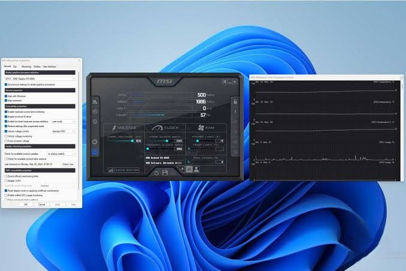

Absolute Precision. Zero Guesswork.
Amateur repair shops rely on trial and error, swapping expensive parts blindly until the machine turns on. At Lapoworld, we operate on a strictly engineered protocol. Every device follows a calculated, scientific journey from the moment it hits our static-free diagnostic benches.
Phase 1: Pre-Teardown Current Analysis
Before a single screw is removed, the diagnostic process begins. When a "dead" laptop arrives, our first step is inline current monitoring. By injecting power through a digital ammeter via USB-C or DC-in, we analyze the exact current draw in milliamps (mA).
The ammeter tells a story: A static 5V / 0.00A draw instantly tells us the USB-C controller (like the CD3215 chip on a MacBook) is failing to negotiate a 20V handshake. A 20V / 0.02A draw indicates the main power rail is present, but the SMC or CPU is refusing to wake. A rapid spike to 20V / 2.50A followed by an immediate crash points to a direct short to ground on a secondary voltage rail. This non-invasive diagnostic maps out the logic board's health before the chassis is even opened.
Phase 2: The ESD-Safe Teardown & Inspection
Once the initial data is logged, the device is moved to our Electrostatic Discharge (ESD) safe mats. Technicians wearing grounded wrist straps perform the teardown. In modern ultrabooks and gaming rigs, chassis design is highly fragile, utilizing microscopic ZIF (Zero Insertion Force) connectors and delicate ribbon cables.
The motherboard is extracted and placed under an industrial digital microscope. We perform a visual sweep at 40x to 100x magnification. We aren't just looking for obvious burn marks; we are hunting for oxidized solder joints, microscopic liquid ingress (even a single drop of sweat from a year ago), and fractured ball joints under BGA components. We cross-reference the physical board with leaked manufacturer schematics and board-view software to identify the exact names of the failing components.
Phase 3: The Surgical Repair (Level 4)
With the exact faulty component identified—perhaps a shorted filtering capacitor on the PPBUS_G3H rail—the surgery begins. The surrounding area of the logic board is masked with heat-resistant Kapton tape to protect adjacent plastic connectors from melting.
We apply high-grade, no-clean rosin flux to the target area. Using hot air rework stations calibrated precisely to the melting point of unleaded solder (around 217°C to 225°C), we isolate the heat. The faulty microchip is lifted with titanium tweezers. The pads on the motherboard are cleaned and tinned with fresh, high-quality leaded solder (which has a lower melting point and greater flexibility), and the donor chip is flowed perfectly into place. The area is then scrubbed with 99.9% isopropyl alcohol to remove all flux residue, leaving a factory-clean finish.
Phase 4: The Quality Assurance Crucible
A laptop booting up to the Windows or macOS logo is not the end of the Lapoworld protocol; it is merely the beginning of the QA phase. A repaired logic board must prove it can survive real-world strain.
We reassemble the device and subject it to a brutal testing crucible. We run memory tests (MemTest86) to ensure RAM stability. We run synthetic loads (FurMark for the GPU, Prime95 for the CPU) to max out thermal output, verifying that our liquid metal or thermal paste application is keeping the silicon well below throttling thresholds. We test every single port, the web camera, microphone array, Wi-Fi antenna throughput, and cycle the battery. Only when a device passes this 24-point inspection is it cleared for client handover.

Verified Client Experiences
We believe in absolute transparency. Here is how our engineered protocol translates to peace of mind for our clients.